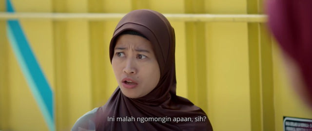
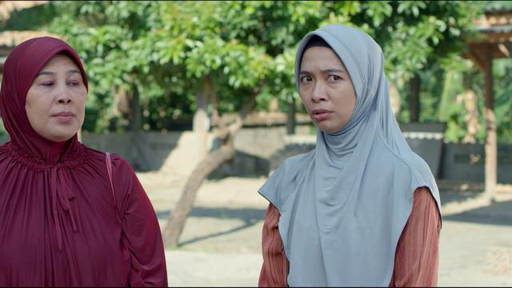
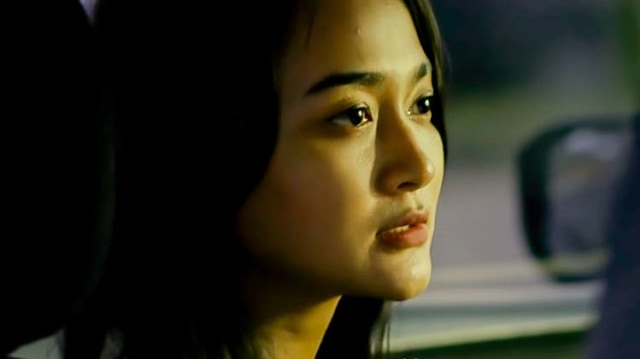

Tokoh Bu Tejo merupakan sosok yang berperan besar sepanjang film. Bagaimana tidak? Sosok Bu Tejo yang dominan dan arogan tentu menjadi sorotan utama dalam film ini.

Yu ning
Tokoh Yu Ning merupakan tokoh yang berusaha untuk tidak termakan begitu saja informasi yang disampaikan Bu Tejo. Yu Ning ini juga bisa dibilang dapat cukup baik mengontrol emosinya yang sebenarnya sensitif, meskipun akhirnya sempat terlibat adu mulut dengan Bu Tejo

Yu sam
Tokoh Yu Sam sebenarnya tokoh yang dapat dibilang sebagai pihak netral. Memang Yu Sam juga terlibat dalam pergosipan namun kebanyakan Yu Sam hanya menimpali saja tanpa bermaksud memihak siapa pun.

Dian
Tokoh Dian yang menjadi topik pembicaraan sepanjang film justru muncul di menit-menit terakhir. Di penampilannya yang singkat Dian memiliki karakter yang sopan dan juga penuh kepedulian karena dirinya ada di rumah sakit untuk menjaga Bu Lurah. Namun tidak hanya itu, Dian ini rupanya cukup manipulatif karena dirinya bisa menyembunyikan rahasia dengan baik dan mempermainkan ibu-ibu dan tentunya para penonton.